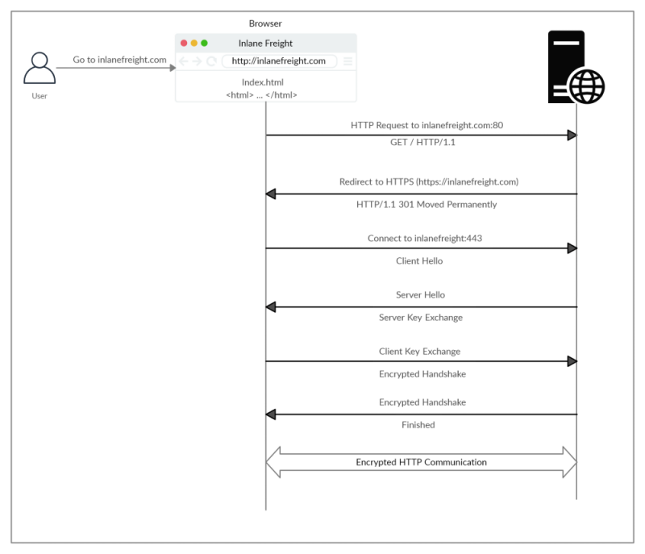

HTTPS: how it works
one of the significant drawbacks of HTTP is that all data is transferred in
clear-text.
This means that anyone between the source and destination can perform a Man-in-the-middle (MiTM) attack to view the transferred data.
1. If we type http:// (port 80) which use the unencrypted HTTP protocol to visit a website, the browser attempts to resolve the domain
2. The user get redirected by the WebServer to secure HTTPS port 443 instead. This is done via the 301 Moved Permanently response code
3.
Connect to FQDN:443 + Client Hello: the client (web browser) sends a "client hello" packet, giving information about itself.
4.
Server Hello + Server Key Exchange: the server replies with "server hello", followed by a key exchange to exchange SSL certificates.
5.
Client Key Exchange + Encrypted Handshake: The client verifies the key/certificate and sends one of its own.
6.
Encrypted Handshake + Finished: An encrypted handshake is initiated to confirm whether the encryption and transfer are working correctly.
Cipher Suite
A
cipher suite is a set of algorithms that help secure a network connection. For HTTPS it is used to achieve
◇ confidentiality of data
◇ integrity of communications
◇ endpoint authentication.
For achieving all of these goals is not possible use only one algorithm or cryptosystem.
The HTTPS client and server must identify a cipher suite that both have in common. Preferable, and by convention, the intent is for TLS negotiation to select the most secure cipher suite that is mutually supported by client and server.
•
Asymmetric cryptosystems (public/private key) → is used for both authentication of endpoints and also securely negotiating a session key that will be used with the symmetric cryptosystem for encrypting bulk data in transit. Strictly speaking, the asymmetric/public key cryptosystem could be used for confidentiality of data, but asymmetric algorithms are orders of magnitude slower than equivalent symmetric algorithms.
◇ RSA, DH, DSA, ECDH, ECDSA
•
Symmetric cryptosystems (session key) → To securely negotiate/exchange the symmetric key(session key) an
Asymmetric cryptosystems is used
◇ DES, TDES/3DES, AES